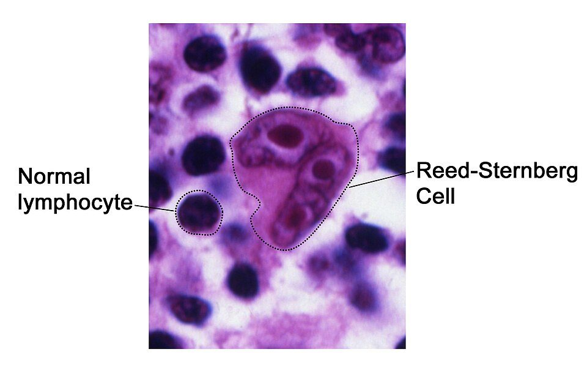

Información divulgativa. No sustituye la valoración de tu equipo médico ni sirve para decidir un tratamiento.


En resumen
| Frecuencia | 2-3 casos por 100.000 al año |
| Quién | Dos picos: 15-35 años y mayores de 55 |
| Célula típica | Célula de Reed-Sternberg (CD30+, CD15+) |
| Señales | Ganglio indoloro en cuello o tórax, síntomas B, picor |
| Tratamiento | ABVD o BEACOPP (BrECADD) adaptados a PET; radioterapia; brentuximab, nivolumab |
| Curación | Más del 90 % en estadios iniciales; 85 % en avanzados |
Qué es
Lo describió Thomas Hodgkin en 1832. Sus células malignas, las de Reed-Sternberg, son escasas y están rodeadas de muchas células inflamatorias normales. El virus de Epstein-Barr participa en una parte de los casos.
Tratamiento
- Estadios localizados: 2-4 ciclos de ABVD con o sin radioterapia de campo afectado, según el resultado de la PET intermedia.
- Avanzados: BrECADD (régimen con brentuximab, que en el ensayo HD21 fue más eficaz y menos tóxico que BEACOPP escalado) o ABVD adaptado a PET; en Estados Unidos, nivolumab con AVD (ensayo S1826).
- Recaídas: quimioterapia de rescate y trasplante autólogo; brentuximab, pembrolizumab o nivolumab.
Efectos a largo plazo
Al curarse a gente joven, importan los efectos tardíos: segundos tumores (mama en mujeres irradiadas en el tórax), enfermedad cardiaca, hipotiroidismo, infertilidad. Por eso el tratamiento se adapta para usar la menor intensidad eficaz, y los supervivientes necesitan seguimiento (por ejemplo, cribado de mama precoz si recibieron radioterapia torácica).
Ver también: Linfomas, Fertilidad y cáncer, Largos supervivientes.
Historia · Medicapedia
Linfoma de Hodgkin en la historia de la medicina
Cómo se descubrió, quién lo investigó y cómo cambió su tratamiento a lo largo de los siglos, contado en Medicapedia, nuestra web hermana de historia de la medicina.
Leer la historia en Medicapedia ↗Fuentes
- Borchmann P, et al. Treatment-related morbidity and efficacy of BrECADD versus eBEACOPP in advanced Hodgkin lymphoma (HD21). Lancet. 2024;404:341-352.01315-1)
- Herrera AF, et al. Nivolumab+AVD in advanced-stage classic Hodgkin's lymphoma (S1826). N Engl J Med. 2024;391:1379-1389.
- Eichenauer DA, et al. Hodgkin lymphoma: ESMO Clinical Practice Guidelines. Ann Oncol. 2018;29(Suppl 4):iv19-iv29.